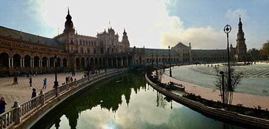

Country: Spain
Language: Spanish
Date of Visit: June 2015
How Did I Get Here?
In the 10th grade, my school offered to lead a trip to Spain in order to visit the sister school there. It was my first trip out of the country without my mom coming with me.
Highlights
Plaza De Espana

As the name suggests, the Plaza De Espana is a large plaza. I was able to walk around here on a bright sunny day, so I was able to take in all the beauty of the architecture. Water is also a big feature of the plaza with a canal running by and a large fountain in the center. There were a few street merchants on the plaza, so be sure to bring some cash for a cool souvenir.
This palace has both beautiful tile decorated rooms and large bright green gardens. The building was quite full of other tourists however, it is well worth the crowds. I enjoyed taking photos of the scene so I would make sure my phone was fully charged before heading hear again